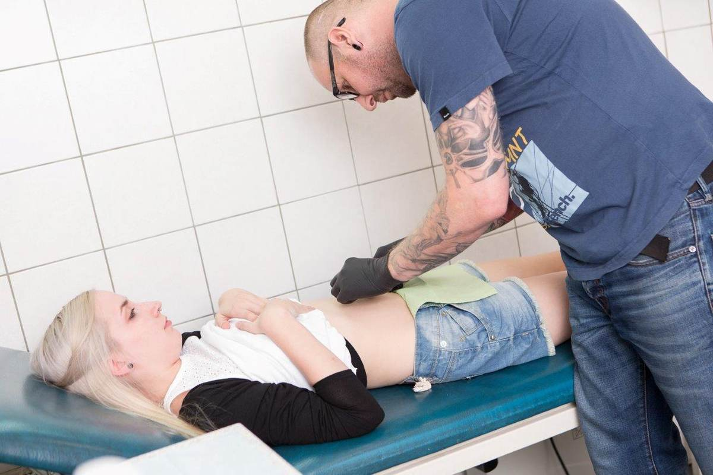

Piercing Avalon · seit 1999
Piercing in Scheibbs. Seit 1999.
Daniel Graf piercet seit 1999 – über 25 Jahre Handwerk, ruhige Hand und ehrliche Beratung. Vom Nasen- oder Bauchnabelpiercing bis zum Intimpiercing bekommst du bei Avalon alle Varianten. Termine gibt es ausschließlich nach telefonischer Voranmeldung.

Ablauf
Vier Schritte.
Anruf & Termin
Wunsch besprechen, Termin fixieren – ohne Wartezimmer-Stress. Nur telefonisch.
Beratung am Spiegel
Platzierung, Erstschmuck und Heilung werden vorab geklärt und angezeichnet.
Der Stich
Mit Handschuhen, vorbereitetem Besteck und viel Routine.
Nachsorge
Klare Pflegehinweise – bei Fragen bist du jederzeit willkommen.
Hygiene
Sauber. Vorbereitet. Routiniert.
Bei jedem Piercing.
Für deinen Termin vorbereitet.
Liege, Ablage, Werkzeug – sauber und bereit.
In der Beratung abgestimmt.
Studio
Ein Blick ins Studio.



Termin? Nur telefonisch.
Daniel Graf · Piercing Avalon im CORNER, Hauptstraße 40, 3270 Scheibbs
Fragen
Kurz beantwortet.
Brauche ich einen Termin?
Was wird gestochen?
Wie sauber wird gearbeitet?
Welcher Schmuck?
Wie lange heilt es und wie pflege ich es?
Ab welchem Alter?
Was kostet ein Piercing?
Im selben Haus
CORNER Mode.Schuh.Treff
Damen, Herren, junge Mode – zum Anprobieren, direkt im selben Gebäude. Mo–Fr 9:30–18:00, Sa 9:00–12:30.
Zurück zur Startseite · Karte unter Kontakt.